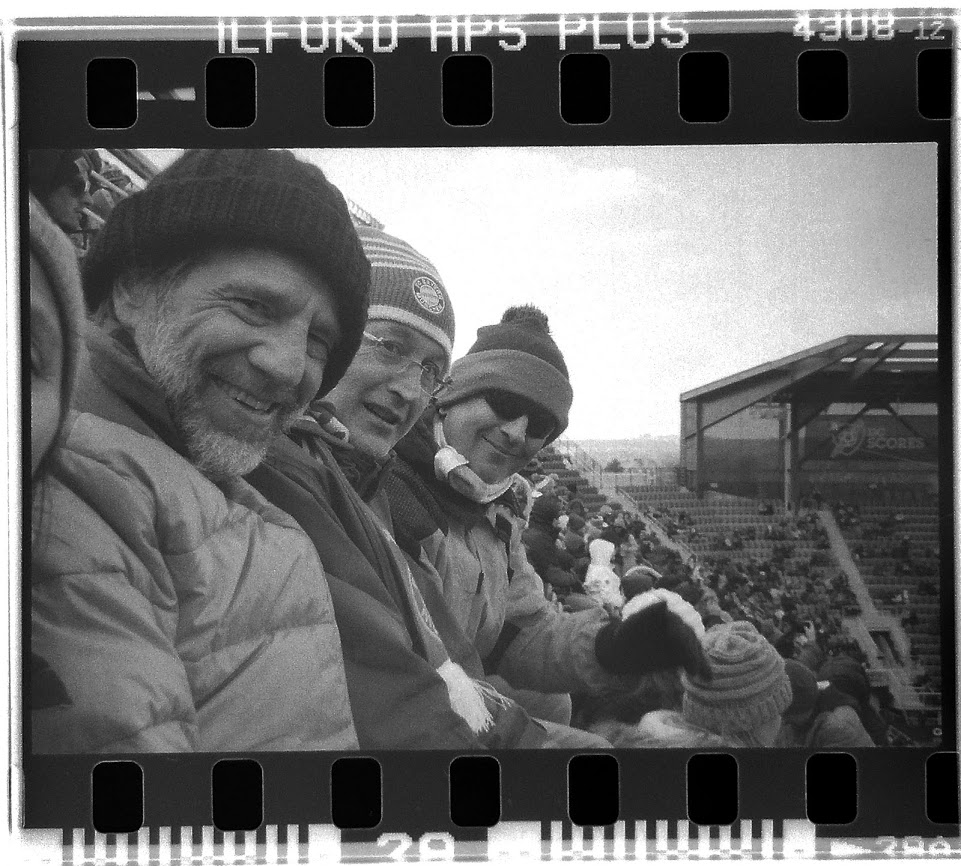

David J. Hoff
As journalist, David walked the halls of Congress and travelled the world (all the way to Antarctica) in serach of a good story.
In recent years, he has helped a Cabinet Secretary message new programs with unprecedented federal funding to revitalize public education and advised CEOs and senior government officials on their most signifcant communications challenges.
David has the ability to execute across a variety of tactics, including media relations, digital strategy, and crisis communications.
In addition to his communications skillset, David knows how to collect, analyze, visualize, and communicate about complex data. He regularly uses data to inform messaging and evaluation of communications efforts.
His biggest admirer (aka, his wife) say he finds the telling details that make stories come to life, and his colleagues remark that his keen insights lay the groundwork for successful communications campaigns. When he's not helping clients, he's walking his dog (preferably wife in the mountains), playing pick-up soccer with a gang of aging hooligans, working on a data project, and planning his next meal.
Portfolio
tickets issued by traffic cameras. We found that the zip codes
with the highest poverty rate were issue a disproportionate
number to tickets.
Covid-19 deaths by 100,000 of a county's population.